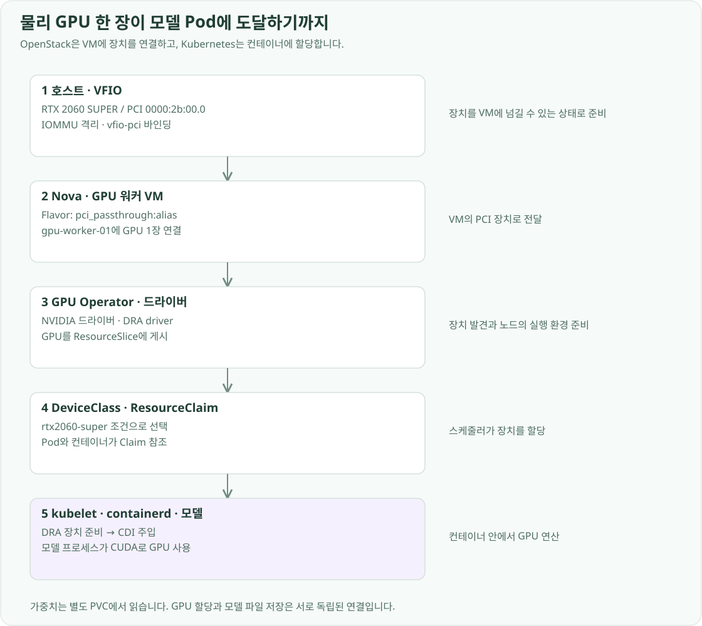

구축 개요
OpenStack의 PCI passthrough로 RTX 2060 SUPER를 GPU 워커 VM에 전달하고, GPU Operator·DRA·CDI로 그 장치를 모델 컨테이너까지 연결했습니다. VM에 장치를 주는 설정과 Pod에 장치를 할당하는 설정을 각각 구성합니다.
물리 GPU를 VM에 전달할 준비
모델을 Kubernetes 안에서 실행하려면 GPU도 그 클러스터의 노드가 사용할 수 있어야 했습니다. 그래서 GPU를 물리 호스트의 모델 프로세스에 쓰는 대신, 뒤에서 만들 gpu-worker-01 VM에 직접 전달하도록 OpenStack을 준비했습니다. 이를 위해 먼저 IOMMU와 장치 그룹을 확인하고, 호스트가 GPU를 일반 그래픽 장치로 점유하지 않도록 vfio-pci에 바인딩했습니다.
GPU 같은 PCI 장치는 DMA로 메모리에 직접 접근합니다. IOMMU는 장치가 접근할 수 있는 메모리 주소를 변환·제한하고, VFIO는 그 장치를 VM에 안전하게 넘기는 기반입니다. IOMMU 그룹은 장치를 서로 격리할 수 있는 경계이므로 GPU 이름만 확인하는 것으로는 부족합니다. 같은 카드의 다른 PCI 기능과 그룹 구성을 함께 확인했습니다. vfio-pci는 CUDA 연산을 수행하는 NVIDIA 드라이버가 아니라 장치를 게스트에 전달하기 위해 호스트에서 사용하는 드라이버입니다.
이 GPU는 PCI의 0000:2b:00.0에 있으며, 같은 카드의 오디오·USB·UCSI 기능도 함께 존재합니다. 현재 이 네 개 기능은 호스트에서 vfio-pci를 사용합니다. 호스트의 장치 점유와 부팅 시 framebuffer 사용도 정리해 VM에 넘길 GPU가 호스트 드라이버와 충돌하지 않게 했습니다.
장치와 커널 드라이버는 호스트에서 다음처럼 확인했습니다.
lspci -nnk -s 2b:00
readlink /sys/bus/pci/devices/0000:2b:00.0/iommu_group
lspci의 -nn은 제품명과 PCI ID를 함께 표시하고, -k는 사용 중인 커널 드라이버를 보여줍니다. -s 2b:00으로 같은 카드의 기능들을 확인했습니다. readlink는 장치가 속한 IOMMU 그룹을 보여줍니다. 호스트의 VFIO 설정에는 확인한 네 기능의 ID를 등록했습니다.
options vfio-pci ids=10de:1f06,10de:10f9,10de:1ada,10de:1adb
이 설정은 호스트 부팅 시 해당 장치들을 vfio-pci가 맡도록 해, VM에 넘길 GPU를 호스트의 NVIDIA 드라이버가 점유하지 않게 합니다.
다음은 OpenStack에 이 장치를 알려주는 단계입니다. Nova 컴퓨트의 PCI 장치 설정에 GPU를 등록하고, rtx2060-super라는 alias를 정의했습니다.
Nova 설정에서 사용하는 장치와 별칭의 연결은 다음과 같습니다.
[pci]
device_spec = {"address":"0000:2b:00.0","vendor_id":"10de","product_id":"1f06","managed":"no"}
alias = {"vendor_id":"10de","product_id":"1f06","device_type":"type-PCI","name":"rtx2060-super"}
device_spec은 Nova가 할당 대상으로 볼 PCI 장치를 지정하고, alias는 VM 요청에 사용할 이름을 정의합니다. managed=no는 libvirt가 호스트 드라이버에서 자동으로 떼어 내는 대신, 미리 VFIO에 바인딩해 둔 장치를 사용한다는 설정입니다. 스케줄러의 PciPassthroughFilter와 함께 다음 Flavor 조건으로 이어집니다.
pci_passthrough:alias = rtx2060-super:1
이 Flavor로 VM을 생성하면 Nova가 해당 PCI 자원을 요구하는 인스턴스로 처리하고, libvirt가 GPU를 VM에 연결합니다. VM 안에서는 PCI GPU가 보이지만, 이 시점에 모델 컨테이너가 GPU를 사용할 수 있는 것은 아닙니다. 호스트의 VFIO는 VM에 장치를 넘기는 역할이고, VM 안의 NVIDIA 드라이버는 그 장치로 CUDA 연산을 수행하는 역할입니다. VM 안의 드라이버와 컨테이너 할당은 Kubernetes 구성 후 GPU Operator로 연결했습니다.
GPU Operator 배포 설정
GPU Operator는 GPUCluster 방식으로 구성합니다. 현재 값의 핵심은 다음과 같습니다.
clusterPolicy:
deployCR: false
gpuCluster:
deployCR: true
driver:
version: "595.91.07"
kernelModuleType: open
nvidiaDriverCRD:
enabled: true
deployDefaultCR: true
toolkit:
enabled: false
devicePlugin:
enabled: false
draDriver:
version: v0.5.1
computeDomains:
enabled: false
노드의 containerd는 기본 runc와 native CDI를 사용합니다. DRA 드라이버가 제공하는 CDI 설정·hook을 통해 장치를 주입합니다. NVIDIA GPU Operator의 DRA 구성에 맞춰 Device Plugin의 nvidia.com/gpu 개수 요청과 DRA Claim 요청을 섞지 않았습니다.
전체 GPU Operator values에는 DCGM exporter의 ServiceMonitor도 포함되어 있습니다. 이 values를 처음부터 그대로 적용할 때는 Prometheus Operator의 CRD를 먼저 설치합니다. 지표 수집 구성과 설치 순서는 모니터링 구성에서 확인할 수 있습니다.
Prometheus Operator가 준비되면 배포 저장소 루트에서 GPU Operator를 설치합니다. Namespace 설정에는 드라이버 설치에 필요한 privileged Pod 실행 정책이 포함됩니다.
kubectl --context openstack-k8s-llmd-lab apply -f infra/helm/gpu-operator/namespace.yaml
helm upgrade --install gpu-operator gpu-operator \
--repo https://helm.ngc.nvidia.com/nvidia --version v26.7.2 \
--kube-context openstack-k8s-llmd-lab --namespace gpu-operator \
--values infra/helm/gpu-operator/values.yaml --wait --timeout 10m
GPU Operator·DRA로 사용할 GPU 지정하기
GPU 워커 VM에는 OpenStack에서 넘긴 물리 GPU가 보입니다. 그 위에 GPU Operator v26.7.2를 설치해 NVIDIA 드라이버와 GPU 관련 Kubernetes 구성요소를 관리했습니다. 드라이버는 VM의 커널에 맞춰 준비되고, 현재 NVIDIA 드라이버 버전은 595.91.07입니다.
여기서 GPU 드라이버가 따라가는 “호스트”는 물리 OpenStack 호스트가 아니라 Pod가 실행되는 GPU 워커 VM입니다. 물리 호스트의 커널은 VFIO로 장치를 넘기고, VM은 자신의 커널에 NVIDIA 드라이버를 로드합니다. 모델 컨테이너에는 추론 엔진과 CUDA 사용자 공간 라이브러리가 있지만, GPU를 제어하는 커널 모듈은 VM의 것을 공유합니다. 따라서 컨테이너 이미지만 바꾼다고 노드 드라이버가 바뀌지는 않습니다.
GPU Operator의 driver Pod는 노드 커널에 맞는 드라이버를 설치·로드하기 위해 필요한 권한과 호스트 접근을 사용합니다. Pod별로 독립된 NVIDIA 커널 드라이버를 주는 기능이 아닙니다. VM·Operator가 커널 드라이버를 관리하고, 모델 이미지는 CUDA 런타임과 추론 엔진을 제공합니다.
GPU 사용량을 수집하는 DCGM exporter도 함께 연결했습니다. 이 수집 설정이 사용하는 ServiceMonitor CRD가 필요하므로, Prometheus Operator를 먼저 설치한 뒤 GPU Operator의 수집 연동을 활성화했습니다.
설치는 인프라 저장소의 Namespace와 Helm values를 사용했습니다.
kubectl --context openstack-k8s-llmd-lab apply \
-f infra/helm/gpu-operator/namespace.yaml
helm upgrade --install gpu-operator gpu-operator \
--repo https://helm.ngc.nvidia.com/nvidia --version v26.7.2 \
--kube-context openstack-k8s-llmd-lab --namespace gpu-operator \
--values infra/helm/gpu-operator/values.yaml --wait --timeout 10m
Namespace 설정과 함께 GPU 구성요소가 사용할 실행 권한을 준비하고, values에서 드라이버 관리·DRA·DCGM 수집 방식을 지정했습니다. --timeout 10m은 드라이버 준비와 관련 Pod의 시작을 기다릴 시간을 확보하는 옵션입니다. 모델 실행용 Pod가 아니라 GPU를 사용할 노드 환경을 설치하는 단계입니다.
제가 원한 것은 Pod에 “GPU 한 개”를 주는 데서 끝나는 설정이 아니었습니다. 어떤 GPU를 사용할지 속성으로 지정하고, 할당된 장치와 사용 Pod의 관계를 확인하고 싶었습니다. 그래서 DRA(Dynamic Resource Allocation)를 선택했습니다. 현재는 카드가 한 장이지만, 장치를 선택하는 규칙과 사용 요청을 별도 자원으로 표현하도록 구성했습니다. GPU Operator의 DRA 드라이버가 장치를 발견해 ResourceSlice로 게시하고, DeviceClass와 ResourceClaim으로 어떤 장치를 사용할지 선언합니다. 기존 device plugin의 nvidia.com/gpu 개수 요청과 DRA를 중복해서 사용하지 않도록 device plugin은 비활성화했습니다.
GPU를 선택하는 클래스는 rtx2060-super입니다. DeviceClass의 CEL selector에서 DRA 드라이버와 GPU 종류·제품명 속성을 대조해 이 카드가 후보가 되게 했습니다. ResourceSlice는 실제 장치 목록을, DeviceClass는 선택 조건을, ResourceClaim은 애플리케이션의 할당 요청을 나타냅니다. 모델용 Claim은 이 클래스에서 GPU 한 장을 요청합니다. 현재 사용 중인 Claim 이름은 qwen25-3b-gpu이며, 이 이름은 현재 실행하는 모델 버전이 아니라 기존 GPU 할당 자원의 식별자입니다.
apiVersion: resource.k8s.io/v1
kind: DeviceClass
metadata:
name: rtx2060-super
spec:
selectors:
- cel:
expression: >-
device.driver == 'gpu.nvidia.com' &&
device.attributes['gpu.nvidia.com'].type == 'gpu' &&
device.attributes['gpu.nvidia.com'].productName == 'NVIDIA GeForce RTX 2060 SUPER'
---
apiVersion: resource.k8s.io/v1
kind: ResourceClaim
metadata:
name: qwen25-3b-gpu
namespace: llm-d
spec:
devices:
requests:
- name: gpu
exactly:
deviceClassName: rtx2060-super
allocationMode: ExactCount
count: 1
DeviceClass는 제품명만 보고 VM에 GPU를 새로 연결하는 설정이 아닙니다. 이미 패스스루되어 DRA가 발견한 장치 중에서 조건에 맞는 것을 고릅니다. Claim의 exactly는 이 클래스에서 정확히 한 장을 할당받겠다는 요청입니다. OpenStack의 Flavor alias는 GPU를 어느 VM에 줄지 정하고, Kubernetes의 DeviceClass·Claim은 그 VM의 GPU를 어느 Pod가 사용할지 정합니다.
Pod는 spec.resourceClaims에서 Claim을 참조하고, GPU를 쓰는 컨테이너는 resources.claims에서 그 Pod 내부 이름을 참조합니다. 다음은 현재 참조 관계를 보여주는 부분입니다.
spec:
resourceClaims:
- name: gpu
resourceClaimName: qwen25-3b-gpu
containers:
- name: main
resources:
claims:
- name: gpu
스케줄러가 Claim에 맞는 장치와 노드를 결정하면, kubelet이 DRA 드라이버에 장치 준비를 요청합니다. 드라이버는 CDI(Container Device Interface) 정보를 제공하고, containerd가 이를 사용해 GPU 장치와 필요한 실행 설정을 컨테이너에 전달합니다. GPU 노드의 containerd에는 native CDI를 활성화했고, 이 경로에 맞춰 GPU Operator의 별도 toolkit 설치는 비활성화했습니다.
GPU 노드에 Pod를 배치하는 nodeSelector는 실행 위치를 정할 뿐입니다. 실제 GPU 사용에는 Claim 할당과 DRA 준비, CDI 전달, VM 안의 드라이버가 모두 연결되어야 합니다.

여기까지 완료하면 모델 Pod가 실행될 기반이 준비됩니다. VM의 생명주기는 Nova가, 노드와 Pod의 배치는 Kubernetes가, 디스크는 Cinder CSI가, GPU는 DRA가 처리합니다. 다음 단계에서는 이 자원 위에서 모델을 서비스할 배포·요청 경로를 구성했습니다.
이 Claim과 모델 PVC를 KServe LLMInferenceService에서 함께 참조합니다.